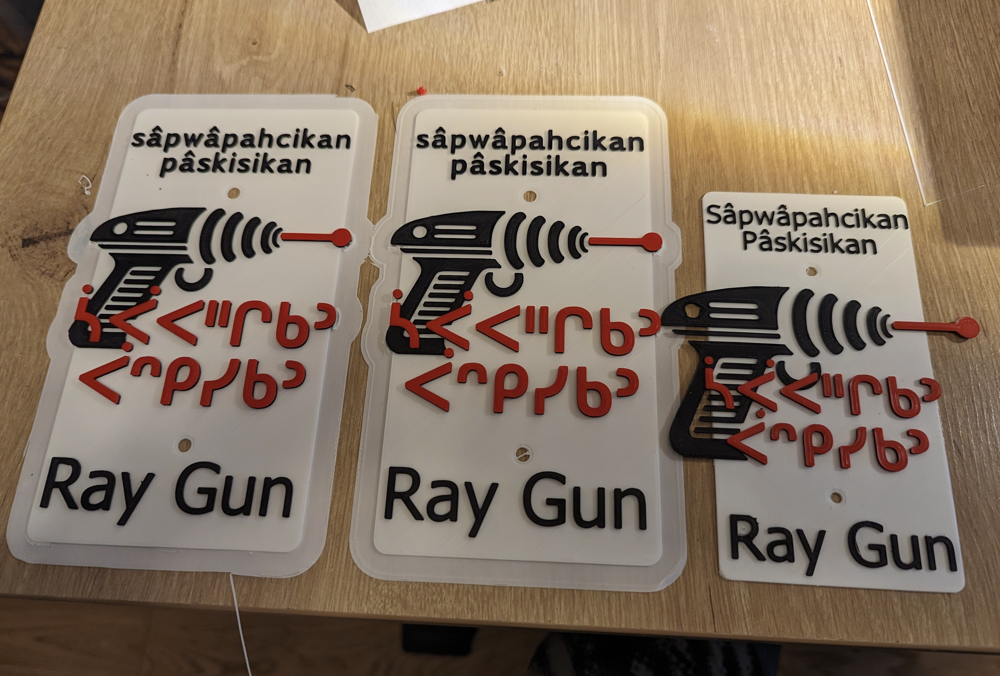

"Ray Gun — literally 'through-shooting firearm' (a coined Cree compound)"

Source render for the Ray Gun plaque — retro-futuristic silhouette in red on white
The carved plaque reads sâpwâpahcikan pâskisikan — literally 'a through-shooting firearm', a tidy Cree neologism for the English mountain-bike trail nickname Ray Gun. The retro silver-on-white silhouette borrows from 1950s pulp sci-fi: thick grip, bell-mouth barrel, a red sound-wave radiating out into a single sharp dot at the end of the beam.
Cree readers will recognise pâskisikan as the everyday word for 'gun' — from pâskisikê‑ 'to discharge a firearm' plus the same instrumental ‑kan ending that builds masinahikan 'book' from 'writing'. The first word, sâpwâpahcikan, picks up the productive verb initial sâpw‑ 'through, all the way through' — the same initial behind sâpwâstê 'a beam of light shines through' — and pairs it with an instrument ending. Together the two words name the trail as 'a firearm that shoots beams through everything.'
sâpwâpahcikan pâskisikan sits in the third row of the wall, just left of capanaskos / Bobsled, and is part of the same Kinsmen / Emily Murphy Park run that includes nikocwâsaskanôs / Six Shooter and sôniyâwâhkêsis / Silverfox. The signs are part of an Edmonton-area effort to put Plains Cree (nēhiyawēwin) names back on the everyday landscape of trails that riders here have known by their English nicknames for a long time. Plaque text colours: black SRO on white, red Cree syllabics, red ray-gun silhouette with the single beam-dot at the tip.
Explore the trail on Trailforks for maps, conditions, and details.
The second word of the plaque, standing alone, is the everyday Cree word for 'gun'.
Same <strong>sâpw‑</strong> initial as the headword, showing the 'through-' family of derivations.
Anchors the 'ray' (beam-of-light) reading in everyday Plains Cree.
| English | SRO | Syllabics |
|---|---|---|
| Ray Gun (the plaque) | sâpwâpahcikan pâskisikan | ᓵᐚᐸᐦᒋᑲᐣ ᐹᐢᑭᓯᑲᐣ |
| Gun, firearm | pâskisikan | ᐹᐢᑭᓯᑲᐣ |
| S/he shoots (with a firearm) | pâskisikêw | ᐹᐢᑭᓯᑫᐤ |
| Through, penetrating (initial) | sâpw‑ | ᓵᐚ |
| Six Shooter (the neighbour plaque on the wall) | nikocwâsaskanôs | ᓂᑯᐚᓴᐢᑲᓄᐢ |
SRO uses ê î ô â. Syllabics match the SRO shown.
Dialectal preferences may affect minor spelling choices; check local norms for signage.
References: itwêwina, Online Cree Dictionary, Plains Cree Dictionary